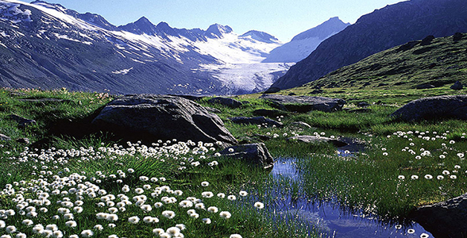
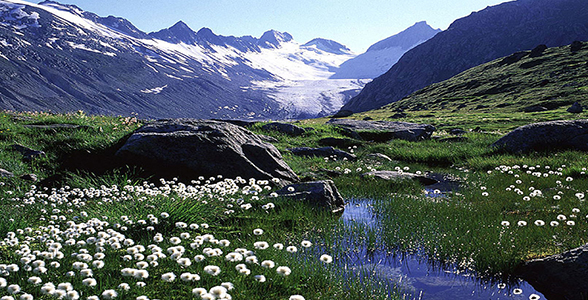

Plant Adaptation

Like the animals, the plants of the tundra are also greatly adapted to the harsh conditions of the tundra. without these adaptations, these plants would never have survived long enough to be here today!

Like the animals, the plants of the tundra are also greatly adapted to the harsh conditions of the tundra. without these adaptations, these plants would never have survived long enough to be here today!
The Arctic willow is what is known as a 'dwarf shrub' which grows close to the ground to avoid the cold wind. It has very shallow roots to help it cope with the permafrost. Sometimes it grows and spreads until it covers the ground like a carpet. Members of the Inuit tribe call it the tongue plant because it's leaves resemble a tongue.